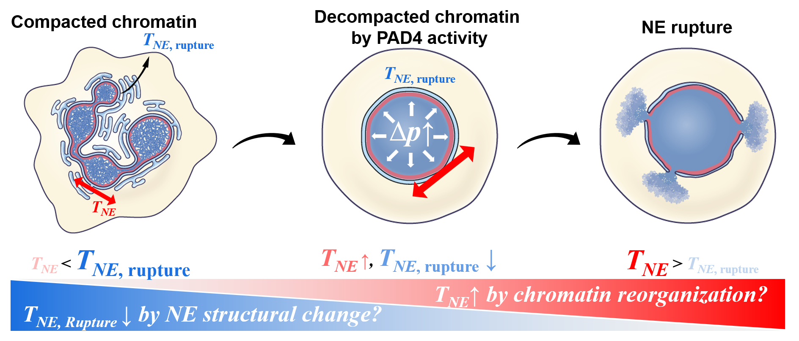
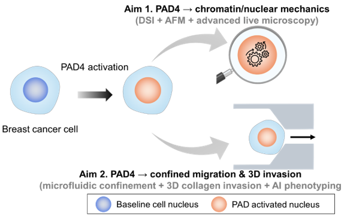

01
Biological questions
Cellular & Nuclear Biophysics
My current work investigates how chromatin reorganization and nuclear-envelope mechanics generate the physical conditions for nuclear rupture during NETosis. More broadly, I study how cell and nuclear mechanics influence immune responses, cancer progression, tissue repair, and scar formation.
NETosisChromatinNuclear mechanicsFibroblastsTumor microenvironment
Representative questions
- How does chromatin decompaction generate intranuclear pressure?
- What determines the mechanical threshold for nuclear-envelope rupture?
- How do mechanical cues alter fibroblast phenotype and tissue remodeling?

